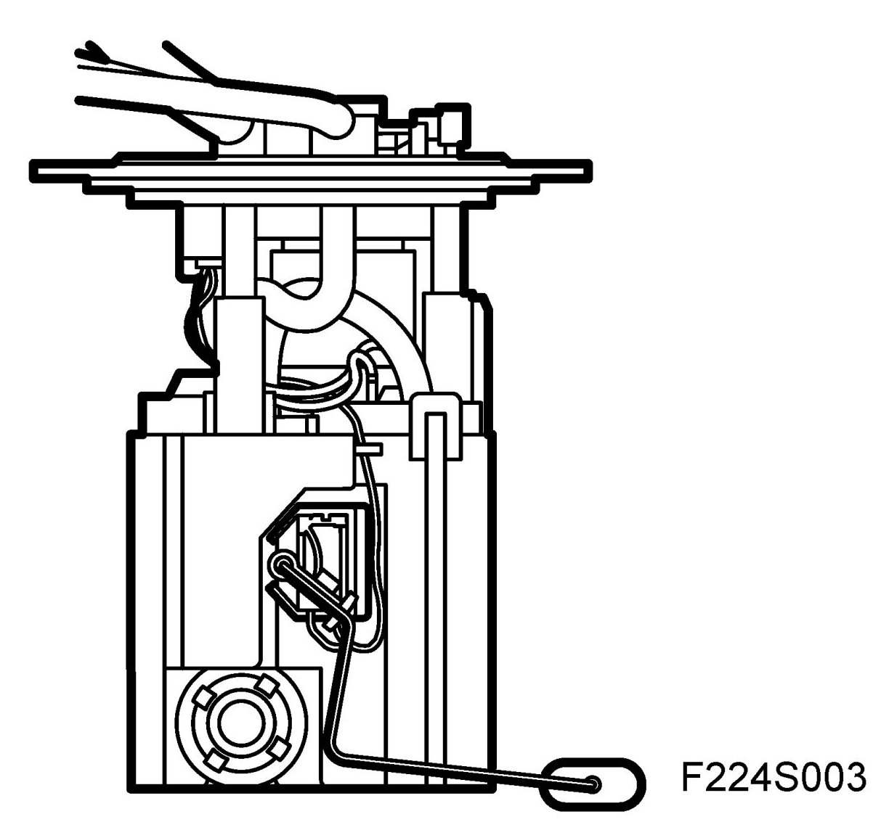
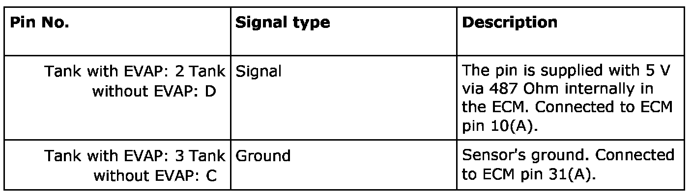
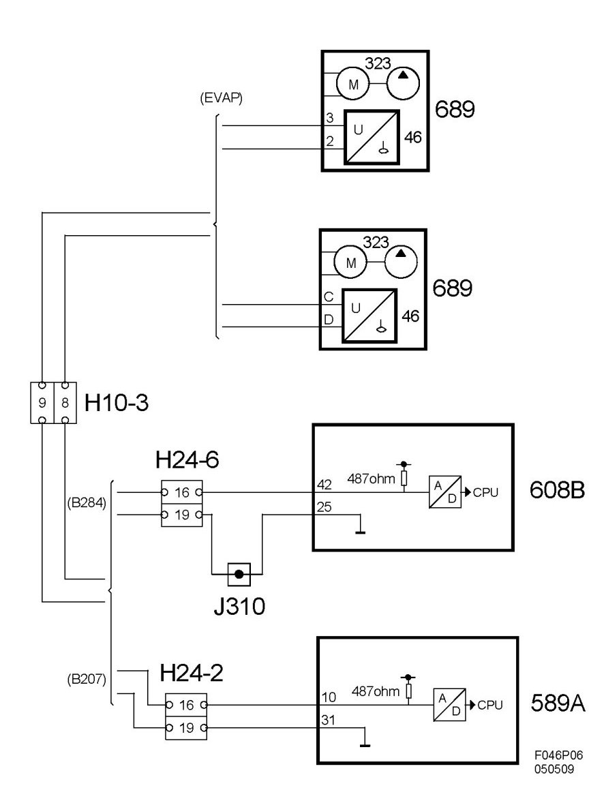
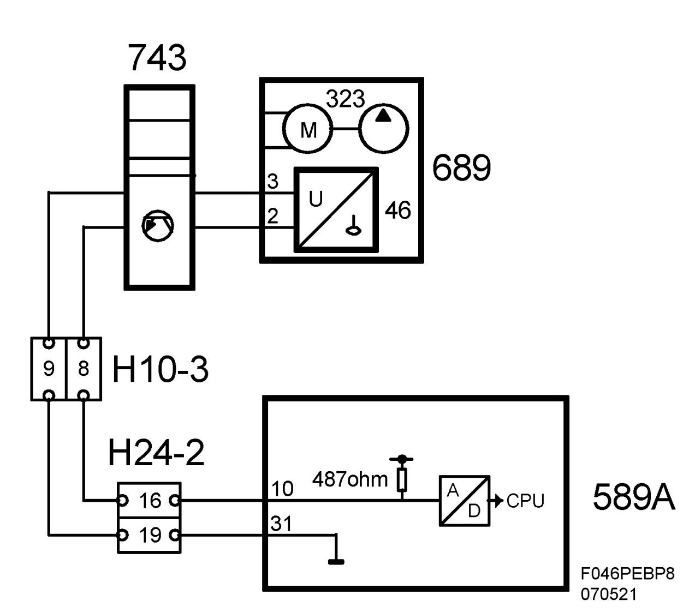

Fuel Level Sensor: Description and Operation
Fuel Level Sensor (46), T8
Location
Fuel level sensor (46)
Main task
Informs ECM on how much fuel is in the tank. ECM then sends this information on the bus.
Type
Level sensor with variable resistance, whose value corresponds to the level at which the sensor float lies in the tank. Feed via pull-up in ECM.

Connection

Diagram

Diagram BioPower
